| THE BASICS of photoshop | |
| Step 01: Some Basic Facts About Photoshop | 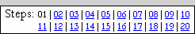 |
This first step is an introduction to the basics of Photoshop. It will cover such basic items as Photoshop's interface, menu, file type, and some other basic info. If you are familiar with Photoshop then some of this information will be a review, but if you have never used Photoshop then this information will be very important to helping you become familiar with the software.
The 20 steps of this tutorial will walk you through creating everything you need to have a wonderful project. As you go through these tutorials, keep something important in mind...
READ
EVERYTHING!
DO NOT SKIP ANYTHING!
READ and FOLLOW the DIRECTIONS CAREFULLY!
Photoshop is an advanced image editing program that was originally developed as a raster image editor in 1988 by Thomas and John Knoll. The program was originally distributed by scanner manufacturer Barneyscan when customers purchased a new scanner. The software was later purchased by Adobe and Photoshop 1.0 was released in 1990. Today, Photoshop is the world's premiere image editing software.
While Photoshop was originally designed to work with raster images, it can also work with vector images (though it does have some limitations).
| Raster image | Vector image |
| 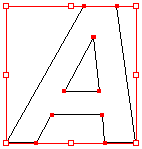 |
The images above are shown larger than their normal size to emphasize that the larger you make a raster image the more distorted it will become while a vector image will remain clean and pretty no matter how big or small you make it.
Let's jump in now and examine the Photoshop interface.
Below is a screenshot of what you will likely see...
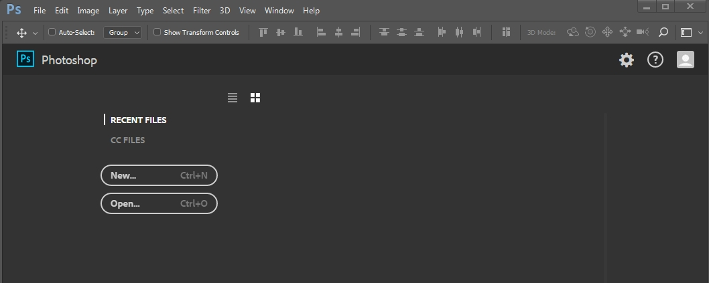
This is called the Start workspace and allows you to select from a list of recent files you have worked with (and since you have no recent files your list will likely be empty, but don't worry if it's not) or to begin working with a new file. Since we are going to be working with the photograph we just took, let's select the Open option.
Let's take a few minutes and have a look around Photoshop and get familiar with the interface. Keep in mind that the layout you see above may not match what you see on your screen because you can customize Photoshop's display (don't worry, we will reset the display so that we all see the same thing in a moment). The dark interface is the default setting for Photoshop, a look that Adobe's developers claim helps to make using the software a more immersive experience and allows users to focus on the image and not on the interface itself. Unfortunately, using such strong colors in the interface can actually trick your eyes into thinking the image you are editing is brighter or darker than it really is. Let's take a second to edit the display and change the hard-to-look-at-black background to a nice light gray color.
Photoshop places the tools for working with images in five main sections:
These five sections along with the Document window (where you actually see and manipulate your image) make up the Photoshop interface. Let's take a quick look at each section.
Application bar
Across the very top of screen is the Application bar (includes File, Edit, Image, etc. - also known as the Menu bar). This bar is common to most Windows and Mac based programs and operates the same in all of them. Near the end of the menu bar is the Window button...
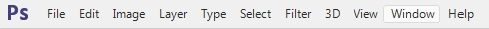
When you click it, a drop-down menu appears that allows you to choose which tool panels you want to show in your workspace. If you mess up your workspace (like close your Layers or History panel or open up every single panel so you have zero workspace), you can use this to reset the display back to the basic settings. Let's do this now so that we are certain everyone has the same display.
While the Application bar is common to computer programs, Photoshop has four unique areas we need to discuss: Tools panel, Options, bar, Panel section, and Status bar. Let's look at each one in more depth.
Tools panel
The Tools panel should be visible to you on the left side of your screen. Take a look at the tools Photoshop offers. Remember that any tool that has a little arrow to its lower right has more than one mode. You can either right-click a button or click it and hover for a second to see all of its modes.
Here's a screenshot of Photoshop's Tools panel (yours is probably one column - this is fine, I just put the image in two columns to made it fit easier on the page)...
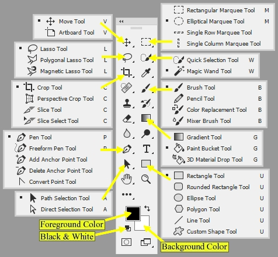Many of the more useful tools are expanded to show all their varieties, and labels are on some other useful parts. It's a good idea to leave the tools with multiple varieties set to the ones you see selected here, since we'll be using the Brush and Paint Bucket tools later.
The top batch of tools has to do with selection and basic editing. The Marquee tools can select areas in the shape of rectangles, circles, and lines. Any selected area will be outlined with a black and white pattern that some people like to call "Marching Ants." Any actions you do will be confined to that area. The selection can be cancelled by clicking Select on the Menu bar and choosing Deselect, or pressing Ctrl+D on the keyboard (this is a useful shortcut - remember it!). Other important tools in this batch are Move (allows you to drag around a selected area), Lasso (for drawing your own selected areas), Magic Wand (for selecting an area of similar colors), and Crop (to remove unwanted portions of your image). The Eyedropper tool is also good to know, since you can use it to pick colors to work with from an existing picture.
The next batch is the freehand tools. The most important ones are the Brush tool (which draws with color), and the Pencil tool (for coloring solid pixels). The Eraser tool works like the brush tool, except that it turns things transparent instead of drawing. The Paint Bucket tool is good for filling areas with a color or pattern.
Next, we have some vector tools. There are several important buttons in this section, such as Text, Pen, and Direct Selection. Many of these tools work by storing data about lines instead of data about pixels. This means we can resize these items without having to worry about the blurring that often happens when graphics are resized. We'll give you a break and say don't worry about these too much right now.
Under these are some miscellaneous tools. The Hand and the Zoom tools are very important, because they can be used to pan and zoom your view of the image you're working on. It's good to know the keyboard shortcuts for these: Ctrl+Plus key zooms in and Ctrl+Minus key zooms out, and clicking and dragging the mouse while the space bar is pressed will pan the picture.
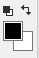Near the bottom of the Tools panel you see two overlapping colored squares. The one on top is the foreground color (in the example picture to the left it is the large black square), which is the color that all the drawing tools use. The one behind it (the large white square) is the background color, which is the color that the eraser uses on a layer that cannot be transparent. These colors can be changed by clicking on them (clicking on them opens the Color Picker, which is explained in more detail in Step 07). The little double-headed arrow icon above and to the right of these squares swaps the foreground and background colors. The tiny black-over-white box above and to the left of the squares restores the foreground color to Black and the background color to White.
Options bar
When we select a tool, the top of Photoshop will offer up a group of options that allow us to customize the tool to complete a variety of tasks. Let's take a quick look at this area.
This is the Tools Options bar. Although every tool in the Tool panel has its own set of options here, some are pretty common. On the very left is a pull down menu you can use to store presets of the current tool (it is that little arrow just to the right of the paintbrush in the image above), which is very useful for defining customized variations of a tool that you'll re-use a lot. Mode: is another common one, and works a lot like the mode of a layer (which we will cover later). We will want this set to Normal for most things that we do.
Panels
On the right side of the Photoshop screen you will see several different Panels, or small windows. There are quite of few of these Panels available in Photoshop (there are over 20 of them), and they will be of great importance to you as you work with Photoshop because they contain tools and information you will use often. At this point you can see the Color, Libraries, and Layers panels. While the Libraries panel is useful, we will not be using it, so let's close it to get it out of the way.
Two of the most important panels are Layers and History. It is a good idea for the Layers panel to be large, and to know where the History panel is so you can quickly correct mistakes. To bring up the History panel, you can click either the Expand Dock arrow to open all docked panels (it is circled below)...
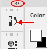
Or you can simply click the History icon pointed at with the arrow above to open only the History panel.
The History and Layer panels are indicated by red arrows below...
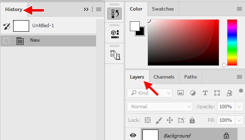
You can rearrange these panels by dragging their tabs (the area that contains the name of the panel at the top) around. As you use Photoshop, you'll discover what Panels are most important to you, and you can place them where you like (for now, leave them alone).
You will get a chance to work with many of Photoshop's Panels as you go through this tutorial, but let's take a quick second to have a closer look at the History panel...
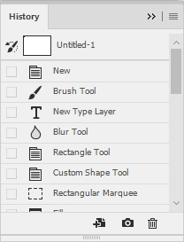
The History Panel allows you to undo multiple actions all at once. The list in the window shows the recent actions you've taken, with the most recent on the bottom. Clicking on previous steps undoes any actions done since that step (for example, if you click 4 steps up the list, Photoshop will undo everything you did after that point). The shortcut to undo the very last action you did is Ctrl+Z, which is very useful when drawing (if you want to undo more than 1 action you have to use Ctrl+Alt+Z, which is the Step Backwards keyboard shortcut). Keep in mind that every change you make to a graphic will be saved in the History panel, no matter how small the change. So if you make a large number of tiny changes you may have to go pretty far up the history list to undo them all.
By default, Photoshop remembers 50 history states (in other words, Photoshop remembers 50 changes you made, no matter how small, to your image). This is not a very large number of states (Photoshop has the ability to save up to 1,000 history states), especially if you are making lots and lots of changes to your image as we are going to do. Let's take a minute now to increase the number of history states Photoshop saves.
Status bar
The Status bar appears at the bottom of the Photoshop window (note that it is only visible when you have an image open)...
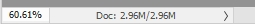
On the far left of the Status bar is the current magnification level, which in the image above is 60.61%. This indicator is handy as you can click in the box and quickly type a new zoom level. Let's change the zoom to see how this works.
Your image should now be much smaller. Just to the right of the zoom is the document size indicator. The left value, which in our example above is 2.96 megabytes, indicates the size of the image file if all layers where flattened and the file where saved as a psd (more on what layers are and what a psd is later). The right value, which in our example above is also 2.96 megabytes (they are the same because we have yet to actually do anything to our image) indicates the size of the image with all layers intact. Keep in mind that these numbers are usually larger than the actual size of the image when you save it - usually, but not always.
On the far right of the Status bar you see an arrow, which indicates that if you click it a sub-menu will appear...
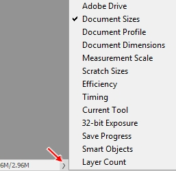
This allows you to change what information appears on the Status bar. As you can see in the image above, Document Sizes is checked by default. We do not have time now to go through what all of the available options do, so if you are interested you'll need to hit the Internet and search for document status options.
Before we move on to actually working with your face, let's take a look at a few additional useful keyboard shortcuts in Photoshop.
| D | Resets the foreground color to black and the background color to white |
| X | Swaps the foreground and background colors |
| F | Toggles between standard, maximized, and full screen modes |
| Tab | Turns the Panels off (and then back on) |
| ] | Increases brush size |
| [ | Decreases brush size |
|
Alt+roll mouse wheel Zooms in and out |
|
Each of these shortcuts will be discussed again as they are needed throughout this tutorial, but it is a good idea for you to be introduced to them now.
After finishing this tutorial (and this course) you will be able to manipulate a wide variety of images. If fact, all kinds of strange images are possible by messing with graphics, as the images below demonstrate...
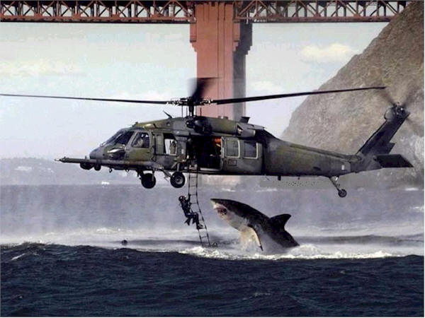
Don't worry, the guy on the ladder didn't get eaten. The image was created by joining a photo of an Air Force helicopter during a water rescue training mission in San Francisco with a photo of a shark breaching (jumping out of the water) off the coast of Africa.
Or how about this one...
Or these...
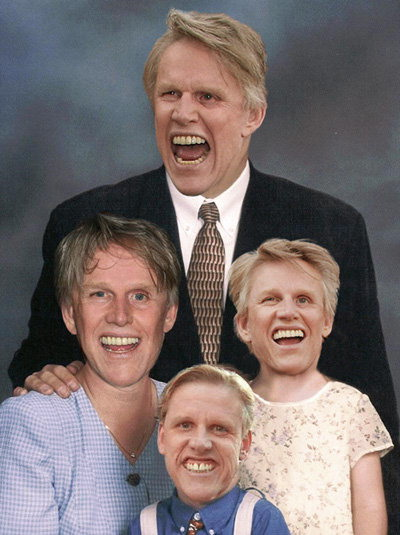
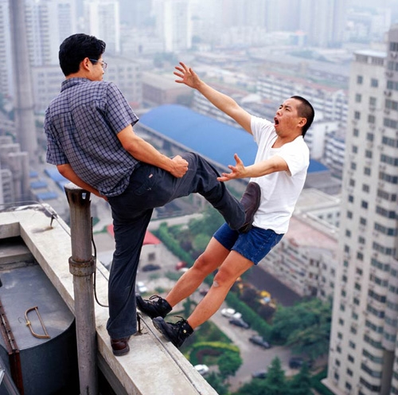
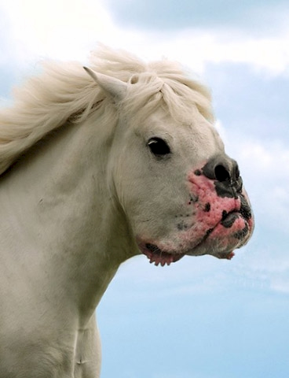
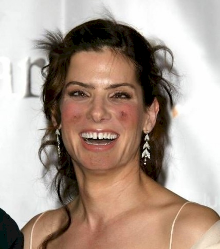
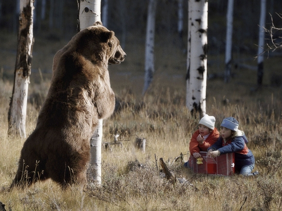
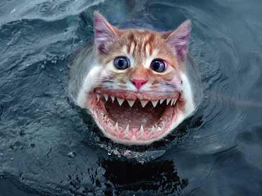
Don't believe everything you see!
Remember to save your work after making ANY changes!
It is very frustrating to redo steps because your computer blew up and you lost
your work!
Alright, now that you are familiar with the parts of Photoshop, let's start working with your picture and remember to...
READ THE DIRECTIONS!
01 | 02 | 03 | 04 | 05 | 06 | 07 | 08 | 09 | 10 | 11 | 12 | 13 | 14 | 15 | 16 | 17 | 18 | 19 | 20